Fullscreen mode
Just press »F« on your keyboard to show your presentation in fullscreen mode. Press the »ESC« key to exit fullscreen mode.
Overview mode
Press "Esc" or "o" keys to toggle the overview mode on and off. While you're in this mode, you can still navigate between slides, as if you were at 1,000 feet above your presentation.
OpenGL
Lesson 4
Author: Egoshkin Danila Igorevich
Всё началось...
1977Всё началось...
(ILM)Всё началось...
ILM - Industrial Light & MagicВсё началось...
Star Wars - 1977
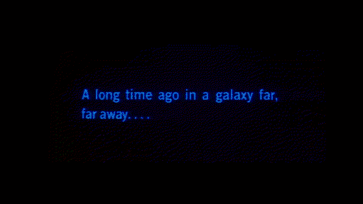Death Star - render farm
The Death Star is the name of the render farm owned by Industrial Light & Magic (ILM). It is a cluster computer originally built by SGI. Since then, it has been converted into a Linux system built by RackSaver (now Verari Systems) with AMD processors. The system originally had 1,500 processors in 750 nodes, this figure was doubled for Star Wars: Episode III – Revenge of the Sith. ILM tends to be quiet about their supercomputer, so its current configuration is not known.Pixar
 Pixar began in 1979 as part of the Lucasfilm computer division, when it was called the Graphics Group, before its spin-off as a corporation on February 3, 1986, with funding from Apple co-founder Steve Jobs, who became the majority shareholder.
Pixar began in 1979 as part of the Lucasfilm computer division, when it was called the Graphics Group, before its spin-off as a corporation on February 3, 1986, with funding from Apple co-founder Steve Jobs, who became the majority shareholder.
John Lasseter
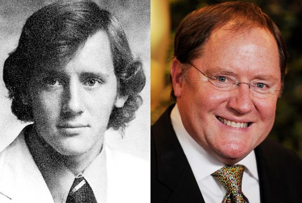Steve Jobs

Steve Jobs - 1985
John Lasseter - 1983
Where The Wild Things Are 1983
But What are the first 3D Cartoons?
1968 - "Кошечка" USSR Cartoon - "Kitty" is a Soviet cartoon made in 1968 using a BESM-4 machine.
19xx - SOON
Toy Story 1995
A Bug's Life 1998
CPU & GPU
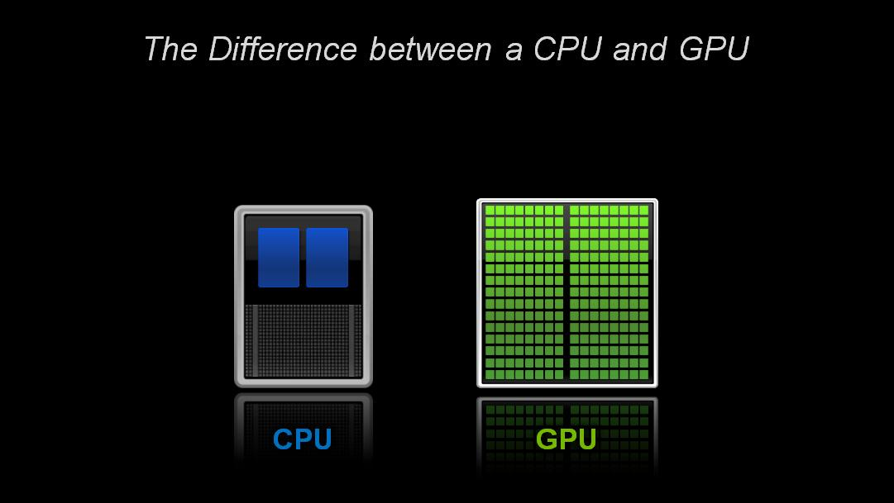CPU Vs GPU
CPU
f(f(f(f(f(x)))))( ((1+1)*10)+(10+100) )*1000
GPU
pixel(x,y) = mesh(x,y) + mesh(x,y).texture(x,y) + ...(x,y);CPU & GPU
 ALU - arithmetic and logic unit. (h254)
CU - control unit - how to respond to the instructions that have been sent to the processor.
ALU - arithmetic and logic unit. (h254)
CU - control unit - how to respond to the instructions that have been sent to the processor.
GPU
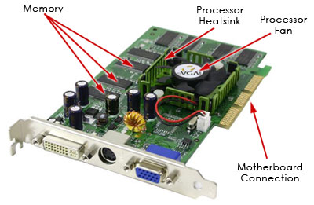
CPU Vs GPU


RenderMan - John Lasseter
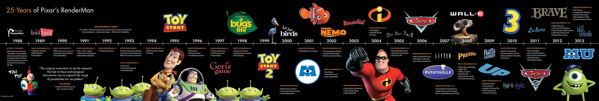Shaders - History
Shaders - Translation
Shaders - Shade - Shadow
Shadow - Illusions
1. Shadow - simple shape
CrocLegendOfTheGobbos 1997
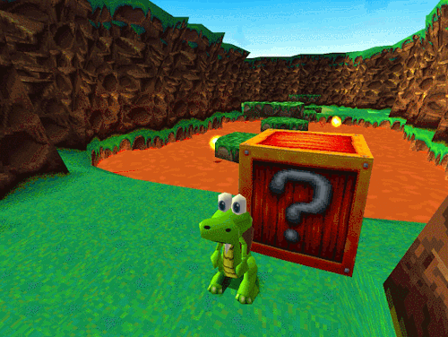SpyroTheDragon 1998
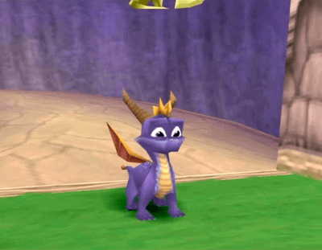SonicDX_1998
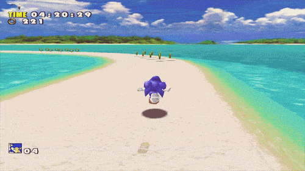102Dalmatians_2000
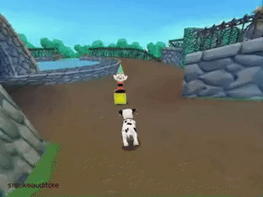2. Shadow - 360
3. Shadow - Baked textures

.gif)
4. Shadow - it is not ready yet
Doom 3 - 2004
Return to Castle Wolfenstein 2003

Volume Shadows
Doom 3 - 2004

Shadow volume

Normal Map
Shaders
> 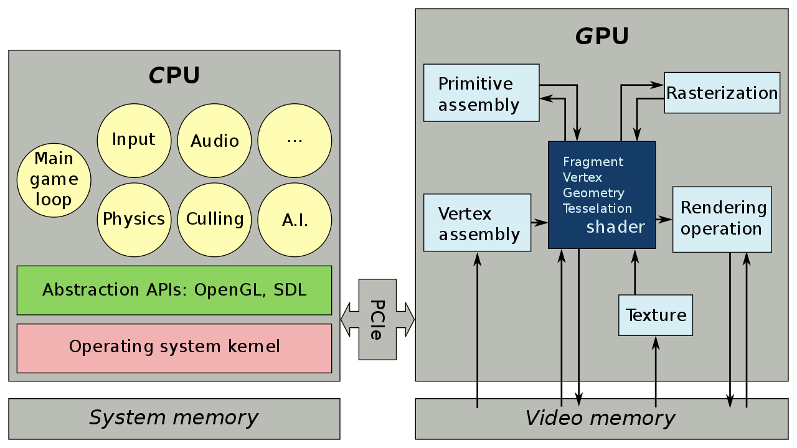Vertex shader & Fragment shader
>Rasterization

Fragment shader
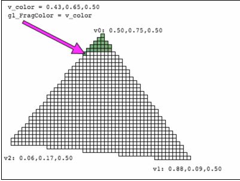Fragment shader (on picture Vertex shader )

FIN
> 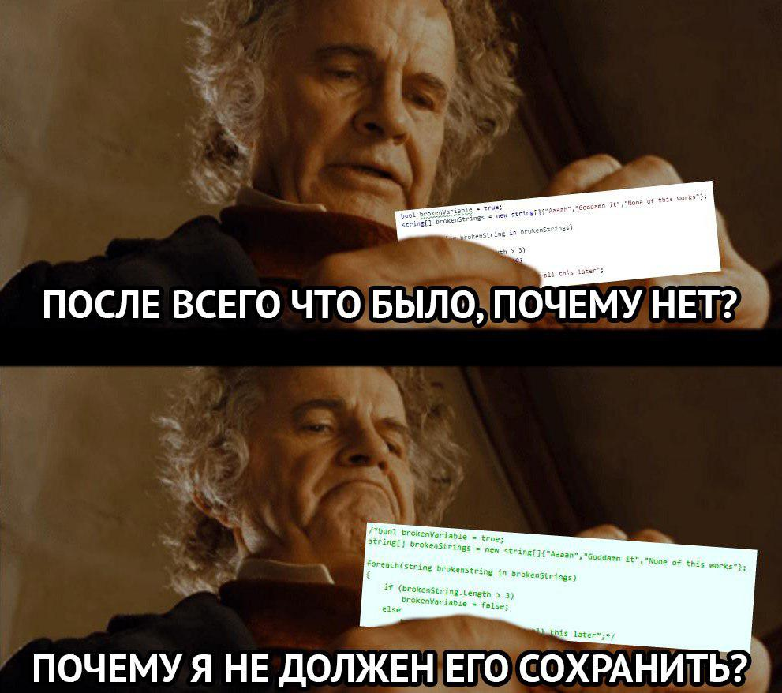